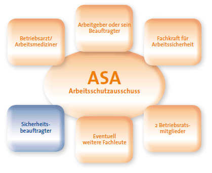

Damit Ihr Engagement für die Arbeitssicherheit und den Gesundheitsschutz erfolgreich zum Ziel führt, sollten Sie Ihre Aufgaben mit Ihrem Arbeitgeber oder Vorgesetzten klären.
Für das weitere Vorgehen ist es wichtig, folgende Punkte anzusprechen:
Klare Absprachen und Zielsetzungen sind die Voraussetzung dafür, dass Ihr Engagement auch zum gewünschten Erfolg führt und dass alle Beteiligten Ihren Einsatz als Bereicherung erleben.
Sie sind ein wichtiges Mitglied der betrieblichen Sicherheitsorganisation. Die Unterstützung für das Handeln erhalten Sie von:
Jedes Unternehmen wird betriebsärztlich und sicherheitstechnisch betreut: Der Betriebsarzt ist Experte für alle Fragen der Arbeitssicherheit und des Gesundheitsschutzes aus medizinischer und ergonomischer Sicht, die Fachkraft für Arbeitssicherheit ist der Profi in Sachen "sichere und gesunde Arbeitsplätze".
Vor allem diese externen oder internen Experten sollten für Sie Ansprechpartner und Ratgeber sein.
Sicherheitsbeauftragte stehen nicht allein da! Grundsätzlich sind alle im Unternehmen Beschäftigten verpflichtet, praktische Maßnahmen für den Arbeits- und Gesundheitsschutz zu unterstützen. Da dies nicht immer selbstverständlich ist, werben Sie um Unterstützung bei Ihren Vorgesetzten, bei den Kollegen und bei Ihrer Mitarbeitervertretung.

Eine erfolgreiche Präventionsarbeit hängt ganz wesentlich vom Zusammenwirken und vom gegenseitigen Informationsaustausch aller im Betrieb ab. Das Arbeitssicherheitsgesetz (AsiG) sieht vor, dass sich Betriebsärzte, Sicherheitsingenieure und andere Fachkräfte für Arbeitssicherheit vierteljährlich im Arbeitsschutzausschuss zu einem regelmäßigen Erfahrungsaustausch treffen. Als Sicherheitsbeauftragter können Sie dieses Gremium nutzen, um Probleme aus Ihrem Bereich, Anfragen von Kollegen und Auffälligkeiten am Arbeitsplatz vorzutragen. In dieser Expertenrunde können Fragen kompetent geklärt und gemeinsam Maßnahmen entwickelt werden. Die Vorschläge für die Umsetzung werden in einem Protokoll festgehalten.
Beraten, vermitteln, gestalten
Und wenn Sie gleich aktiv werden wollen, hier einige Punkte, die Sie vielleicht sofort aufgreifen können:
Nutzen Sie die Informationsmöglichkeit von Betriebs- und Montageanweisungen und Herstellerinformationen. Im folgenden Kapitel möchten wir Ihnen kompakt den schnellen Weg zu Informationsquellen aufzeigen.